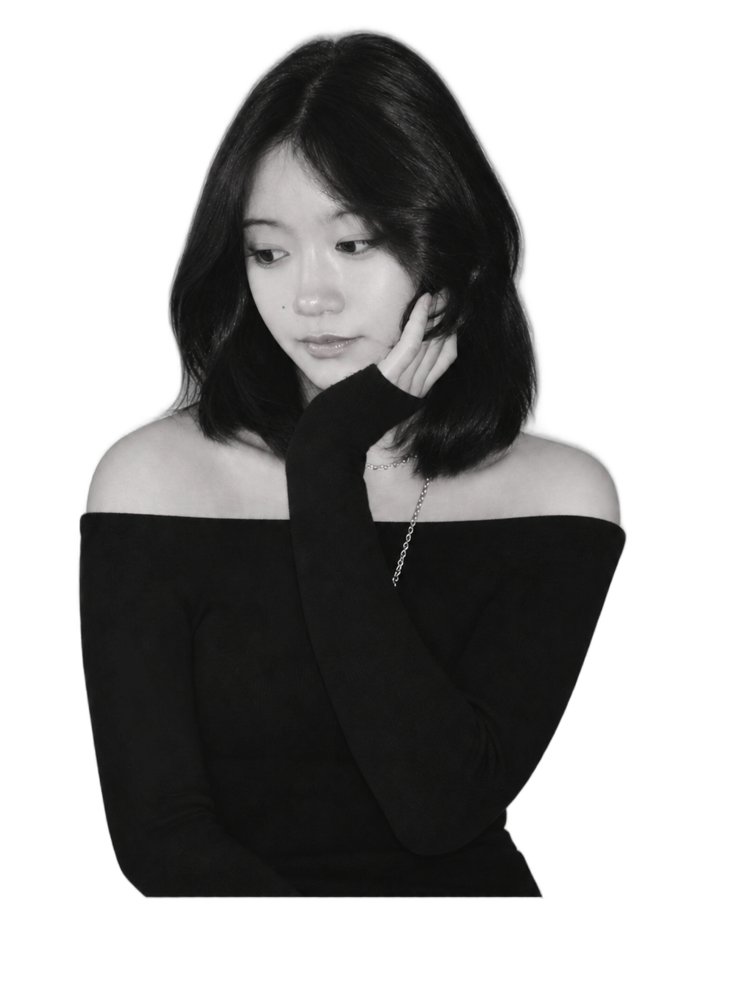

Hi, I’m Xinyu. I’m a developer with the eye of a designer.
Computer Science and Industrial Design at Georgia Institute of Technology
Scrapes consumer complaint forums and cross-references them against official FDA data to surface likely recalls before they're announced.
I did the design and frontend, and built the Grok integration that classifies complaint text.
2026
Design, frontend & LLM integration
Figma, Grok, Exa, openFDA
One or two sentences on what this is and the decision that mattered most.
Year
Role
Tools
One or two sentences on what this is and the decision that mattered most.
Year
Role
Tools

Nice to meet you!
I'm currently a full-time student at the Georgia Institute of Technology, pursuing a B.S. in CS and a minor in Industrial Design. Right now I'm a developer on the WELab VIP, building the work order system for a facility management app for local parishes.
This past summer, I was a lead instructor at iCode Augusta, where I got to teach kids how to make games in Roblox, Unreal Engine, and Minecraft :D. I also did IT backend work to manage the technical infrastructure… but that part's not as fun. I'm also working on getting my AWS Cloud Practitioner certification.
Outside of school, I love being active outdoors, playing music for my band, and exploring new hobbies. I'm passionate about combining technology and creative arts to produce unique products. I love how I can take ideas that come from pure imagination and design and build them into real experiences.
Connect with me, I'd love to chat about anything, it doesn't have to be tech related!